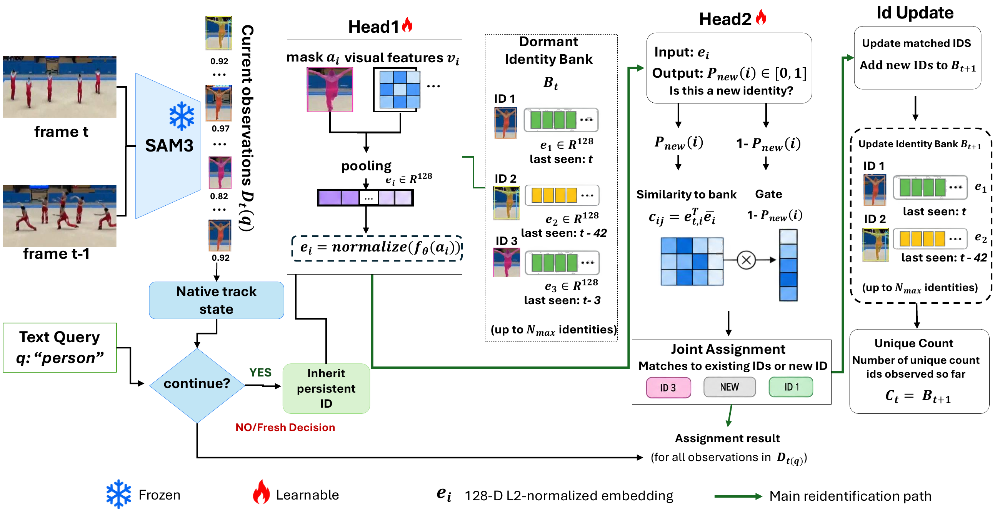

Joana Konadu Owusu
Joana Konadu Owusu
IDTCount: Counting Every Instance Once in Open Vocabulary Video Counting
WACV 2027 · Under review
Integrates a learned re-identification module and an association mechanism into SAM3’s video tracking loop. A projection head trained with supervised contrastive learning learns compact identity representations to help count each instance once.